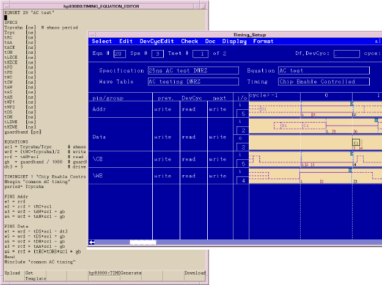

Create timing
In a memory test you typically work with lots of different frequencies. Using standard waveform-sets you might run out of resources. Therefore, equation based timing should be used.
Note Use Single Mode (if the timing is not too complicated) as this makes describing
the ports easier and also means you can have the same device cycle defined across all
pins.
Use the data sheet to set up the equation-based timing.
